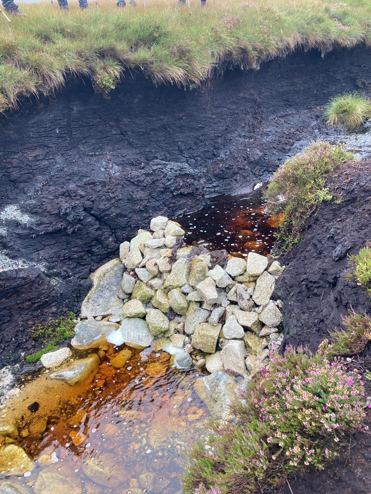

Timber Dam
Plank dams used in high-flow areas or where peat depth is insufficient. Click to see examples.

Stone Dam
Utilised in high-energy channels where heavy erosion requires structural support. Click to see examples.

Coir Log
Lightweight, biodegradable interventions designed to trap sediment. Click to see examples.